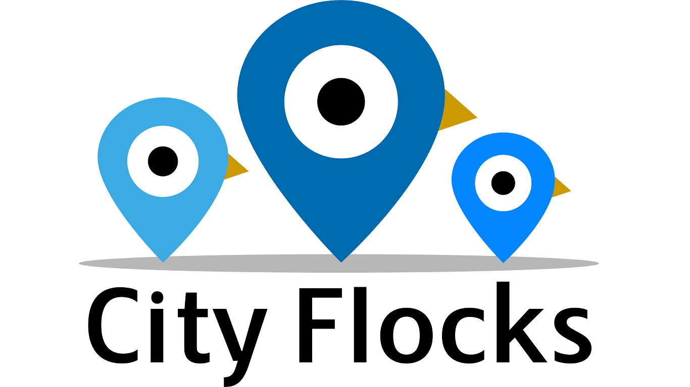

City Flocks
The Team Based Urban Scavenger Hunt App
City Flocks is a mobile application that combines city exploration and team collaboration in order to create an escape room style scavenger hunt experience. The application was built in React-Native, using Expo's development kit. Our team chose Expo because of its built in geofencing library, which we used to keep track of team member's positions relative to each other and the current game they are playing. For the backend, we decided to create and run a separate server coded in NodeJS. Our database was managed using PostgreSQL, which we used to keep a running list of events both past and present, as well as maintaining a record of every teams' past games. We managed the application's state using a Redux store. For the game state, we used a Redis cache shared between members of the same team to ensure all team members stayed up-to-date with the overall game progress.
My role in the development process was mainly in the development and maintenance of the server and database. I had to create a database schema that could as efficiently keep track of events and teams, while also making the database capable of keeping a record of past events and an overall team score. Then I had to design each indiviual route that thoroughly covered each possible action called upon by the front end. After the setting up a basic server, I worked on the development of the redux store, the login/signup methods, and the geofencing logic.